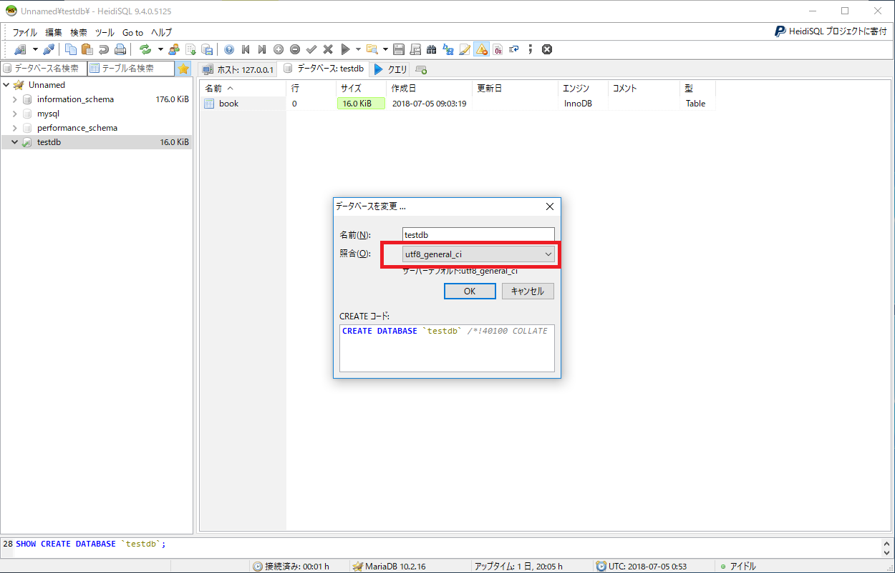

MariaDB(マリアディービー)とはMySQLから派生したオープンソースの関係データベース管理システム（RDBMS)です。
MySQLと互換性があり、Googleにも採用されています。
また、多くのストレージエンジンを採用していることやスレッドプールが標準で利用できることも魅力の1つです。
公式サイト(https://mariadb.org/)からダウンロードできます。
任意のブラウザを起動し、上記URLを入力します。
今回はMicrosoft Edgeを使用しています。
下記のページが表示されます。
ページ上段のメニューに表示されている「Download」をクリックします。

下記のページが表示されます。
ページ中央「Download」をクリックします。

下記のページが表示されます。
ページ中央「Download 10.3.7 Stable Now!」をクリックします。

下記のページが表示されます。
このページでは「OS/CPU」からインストールしたいOSのMariaDBを選び、
「File Name」をクリックして実行ファイルをダウンロードします。
今回は「Windows x64」、msiのインストーラをダウンロードします。

下記のページが表示されます。
ブラウザによってはファイルに対する操作を要求されるので「保存」を選択します

ダウンロードしたファイルを実行し、インストール作業を行います。
それでは、インストーラを実行し、インストール作業を行います。 実行すると初期画面が表示されます。 「Next」をクリックします。

利用規約の画面が表示されます。
I accept the terms in the License Agreementにチェックをいれます。
「Next」をクリックします。

インストールするモジュール選択の画面が表示されます。
今回はこのままインストールを続けます。
「Next」をクリックします。


利用するサービスの設定画面が表示されます。
今回はこのまま続けます。
「Next」をクリックします。

フィードバックプラグインの有効化の確認画面が表示されます。
今回はこのままで続けます。
「Next」をクリックします。

インストール開始の確認画面が表示されます。
「Install」をクリックします。

インストール中の画面が表示されます。
インストール状況を確認できます。

インストール完了画面が表示されます。
「Finish」をクリックしてインストーラを終了します。

以上で、インストール作業が完了します。
本項では、データベースへ接続する方法について説明します。
まず、スタートメニューから「HeidiSQL」をクリックします。

セッションを作成する画面が表示されます。
「新規」をクリックします。

ネットワーク識別項目にMySQLを選択します。
パスワード項目にインストール時に設定したパスワードを入力します。
「開く」をクリックします。

接続に成功すれば、下記の画面が表示されます。

以上で、データベースとの接続が完了します。
この項目では、データベースの基本的用語を下記の画像と合わせて紹介します。

データを管理するための入れ物のことを「データベース」と呼びます。
データベースに作成できる入れ物のことで、データを実際に格納する場所です。
また、表のような構造になっています。
テーブルの行のことです。ロウとも呼びます。
レコードを構成する属性のことです。フィールドとも呼びます。
データベースへの接続完了後の画面から説明します。

画面左側で右クリックし、新規作成を選択します。
新規作成欄の「データベース」をクリックします。

作成するデータベース名を入力するポップアップが表示されます。
今回は、「testdb」というデータベースを作成します。
名前を入力し、「OK」をクリックします。

作成されたデータベースは画面左側で確認できます。

画面左側のデータベースを右クリックし、ドロップをクリックします。
今回は、「test」を削除します。
削除確認のポップアップが表示されます。

OKをクリックします。

画面左側に削除されたデータベースが表示されていないことを確認します。

操作対象のデータベースを指定するときは、
画面左側のデータベース名をクリックします。
また、現在操作対象のデータベースには緑色のチェックが表示されています。

ルートユーザでは扱える権限が広く、誤った操作をしてしまうと影響が大きいため、
データベースごとに作業用ユーザを作成することが一般的です。

この画面ではユーザーの作成及び権限を与えることができます。
まず、左側の追加ボタンをクリックします。

右側に名称未定のアカウント情報入力画面が表示されます。

今回は、「testuser」というユーザ名で作成します。
ホストはデフォルトの状態で続けます。
パスワードは任意のものを入力し、確認用にもう一度入力します。

次に、このユーザに権限を与えます。
アクセス許可項目にグローバル特権にチェックを入れます。
グローバル特権によってこのユーザはすべてのデータベースに対する操作が可能になりました。
保存ボタンをクリックします。

画面左に「testuser」が作成されたことを確認します。

それでは、実際にテーブルの作成を行いましょう。
画面左のデータベースを右クリックし、新規作成項目からテーブルをクリックします。

作成するテーブルの内容を入力する画面が表示されます。
まず、右画面に表示された基本タブにある名前項目にテーブルの名前を入力しましょう。
今回は、「book」と入力します。

次に、テーブルに行を追加しましょう。
画面中央のカラムという項目の「追加」をクリックします。

「カラム１」という名前の行が表示されます。

この行を編集し、データ型や長さ、NOT NULL制約や初期値の設定を行います。
今回は、「id」と入力し、データ型をINTにします。長さは10と入力します。
その他の項目はデフォルトの状態で続けます。

同様にして、行の追加を行います。
下記の画面のように行を追加します。

作成したテーブルは、画面右のデータベースタブをクリックするとテーブル一覧を見ることができます。
それでは、作成したテーブルの操作を行いましょう。
この項目では、以下の操作について紹介します。
操作を行うためには、画面右側のクエリータブをクリックします。
クエリータブにテーブルを作成するクエリーが残っていた場合は削除します。

データの挿入にはINSERT INTO文を実行します。
構文は INSERT INTO テーブル名(テーブルのカラム名)
VALUES(カラムごとに挿入するデータ)となります。(行番号1)
また、テーブルのすべてのカラムに値を挿入するときは
テーブル名の後に記述するテーブルのカラム名を省略することができます。(行番号2)
今回は、
Insert into book('id','book_num','author_name','title','price')
Values('1','2','夏目漱石','吾輩は猫である','1200');
このように入力しましょう。
同様にして、
Insert into book('id','book_num','author_name','title','price')
Values('2','3','太宰治','走れメロス','800');
さらにデータを挿入します。
このようなデータを操作する文をクエリーと呼びます。
クエリーを入力するときはカラム名をシングルコーテーションで囲みます。
これはすべてのクエリーで共通の条件となります。
また、構文では大文字で表記していますが、MySQLでは大文字と小文字の区別はないため
画像のように小文字で入力しても実行可能です。
クエリーの実行は画面上段のSQLを実行と表示されるアイコンをクリックします。

挿入したデータはデータタブをクリックして確認することができます。

抽出したいデータに条件を付けるときはテーブル名を記述した後にWhere句をつけて
条件を指定することができます。
今回は、
Select title From book Where id = 1;
と入力します。
SELECT文の実行結果クエリータブの下に表示されます。


今回は、
Update book Set price = 1300 Where id = 1;

Delete * From book Where id = 2;
と入力します。

データが削除されているか、データタブを表示して確認します。

作成したテーブルは画面右側のデータベースタブをクリックします。
また、各テーブルの構造はデータベースタブに表示されたテーブル名をクリックし、確認します。
このセクションでは、テーブルに登録できる型を紹介します。
データベースに登録できる数値の型は次の２種類が代表的に挙げられます。
INTEGER型は整数型とよばれるものです。
表現できる数値の範囲は、最小値-2,147,483,648から最大値+2,147,483,647までです。
DECIMAL型は固定小数点型とよばれるものです。
表現できる数値の範囲は精度とスケールによって変化します。
例：精度 = 5,スケール=2 の場合
DECIMAL(5,2) と表現され、-999.99 から+999.99までの表現が可能です
文字列を表現するデータ型は以下２種類が挙げられます。
固定長の文字列型です。値の範囲は0から256までです。
長さを固定するために、文字数が長さに満たない場合は空白スペースで長さを満たします。
以上のことから、文字列としての長さが一定である型となります。
可変長の文字列型です。値の範囲は0から65536までです。
データのサイズが255より小さい場合は1バイトプレフィクスとして格納され
より大きい場合は2バイトプレフィクスとして格納されます。
文字列として、空白を用いる場合はVARCHARを推奨します。
理由としては、CHARが文字列の長さを満たすために空白を文字列に追加するからです。
逆に格納する文字列が一定であるならばCHAR型が推奨されます。
必要十分な長さを用意できることや、長さより大きい値を格納する心配がありません。
文字列を扱う際にマルチバイト文字というものに気を付ける必要があります。
マルチバイト文字とは1文字を複数バイトで表現する体系です。
日本語をデータベースに登録したときに、実際のデータが文字化けしてしまうという現象が
発生します。
これは、データベースがマルチバイト文字を認識できないため発生する現象です。
データベースの文字コードを編集します。
画面左のデータベースを右クリックし、編集をクリックします。
データベース作成という画面の照合をutf8_general_ciに変更します。
DATE型は日付を表現できるデータ型です。
TIME型は時間を表現できるデータ型です。
DATETIME型は日付と時間を表現できるデータ型です。
TIMESTANP型は現在の日付・時間を表現できるデータ型です。
YEAR型は年を表現できるデータ型です。
TINYINT型で表現することができます。
値を1に設定するとtrueと等しくなります。
値を0に設定するとfalseと等しくなります。
ただし、それ以外の値はtrueともfalseとも等しくなくなります。